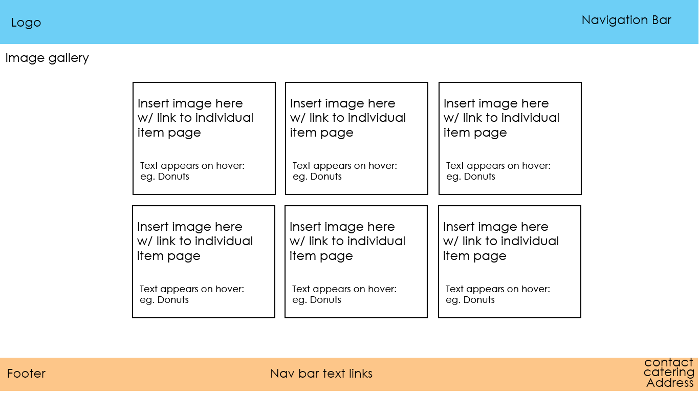

<Darrell Ng, JCUID 14119799>
Hosted Site link : http://petitetreats.herokuapp.com/ Github Repository: https://github.com/ElvishPiper/petitetreatsThe Petite Treats website is intended to pique interest and drive foot traffic to the physical store by appealing to the visitors visual senses through aesthetic displays of the stores main offerings, thereby increasing overall sales and customer volume.
To inform customers on main offerings and on-going special deals, and consequently entice customers to visit the physical store through a positive brand association.(visuals of good food = petite treats)
Given that the website will be the main advertising medium, any increases to sales and customers
to the bakery after the first month of publishing can be attributed
to the site by comparing with sales volumes of previous months.
In-store surveys of where customers have heard about petite treats or website-exclusive promotions might be utilized to judge the efficacy of the website.
Local residents consisting of families and young people from ages 17 to 35.
As the age group is skewered toward the young, site design is sleek and trendy without sacrificing user-friendliness.
About me text re-write:
We are a family run local bakery operating in Kirkwan since 2012.
We specialize in traditional Australian baked goods, lovingly made by our very own Paris trained artisan baker!
Come visit us at our new store, conveniently located near the Willows Shopping Centre.
For each product, a placeholder description has been added to each for content.
For specials, placeholder products with corresponding description and pricing has also been added.
Index Page:
banner2.jpg - 1000 x 300 / main banner image
creampuff.jpg - 640 x 480 / weekly specials image
raspberry_tart.jpg - 600 x 600 / sample product image
donutline.jpg - 640 x 420 / sample product image
croissant.jpg - 640 x 360 / sample product image
custm.png/custf.png - 100 x 100 / customer profile image
About Us Page:
banner3.jpg - 1300 x 570 / main banner image
cowboys_logo.png - 100 x 100 / customer logo
jcu_logo.png - 200 x 100 / customer logo
telstra_logo.png - 200 x 100 / customer logo
about.jpg - 640 x 460 / about us filler image
Menu Page:
banner4.jpg - 975 x 260 / main banner image
donut.jpg - 640 x 460 / Menu image
vanilla_slice.jpg - 640 x 420 / Menu image
randy_tart.jpg - 600 x 380 / Menu image
custard_tart.jpg - 640 x 420 / Menu image
raspberry_cheesecake.jpg - 700 x 400 / Menu image
apple_cake.jpg - 600 x 480 / Menu image
Specials Page:
banner5.jpg - 1400 x 400 / main banner image
creampuff.jpg - 640 x 480 / specials product image
cupcakes.jpg - 640 x 480 / specials product image
lamingtons.jpg - 640 x 480 / specials product image
Newsletter Page / Submitted page:
banner6.jpg - 1078 x 607 / main banner image
newsletter_image.png - 640 x 448 / specials product image
Note: Inital layout sketches are not indicative of final design
Index:

About:
Menu:
Individual Menu Items:
Specials:
Newsletter:
Newsletter Submitted:
Font:
Header / logo : Dancing Script Medium
Sub-headers : Bebas Neue Regular
Paragraphs: Raleway Regular
Pastel Color Scheme:
The pastel color scheme were selected with the younger target audience in mind, and is meant to invoke a colorful and playful imagery that complements the colorful baked treats and the usual "brown" baked goods (bread, tart crust, donuts). The relatively vibrant colors on both ends of the color scheme is meant to provide contrast and a way to draw attention.
Fonts:Similary, the choice of a handwriting script for the font header, applied to most notably the Petite Treats logo,
is firstly meant to establish a personal connection with the audience,
drawing parallels to the fact that the bakery is local and a family run business.
The subheaders are in a bold and impactful Sans Serif block font which draws attention
by creating presence and providing contrast.
Lastly, the crisp font for main contents was chosen to provide style whilst maintaining readability.
Each page shares the same overall layout; Header and Nav bar at the top, the main content in the middle, and the footer at the bottom. All layouts are designed to be responsive, whether on desktop or mobile.
On desktop versions at full screen, the Nav bar is colored red for constrast and slightly transparent so that the banner image shows through, and changes to a solid block on small screen width and on mobile (so that it doesn't cover the banner text). The Nav bar contains a prominently displayed main logo, followed by the main page links.
The banner follows the Nav bar, and contains the banner image, followed by text of the page that the user is on. All banner images share a bakery theme and are ultimately meant as placeholders (note: as are all images on the staging site; final images are subject to the clients).
Main content is typically in a grid format that places an emphasis on photo offerings over text. The visual imagery is meant to entice and gain the users attention first. The main content uses the middle parts of the color scheme to maintain a flow and prevent any clashes with the images.
The footer is unchanging for all pages, and primarily contains the main contact details of Petite treats, along with page links for accessibility and the main logo. The footer uses the other end of the color scheme to again provide contrast with the main content.
Since contact information is included in the footer and displayed accordingly on each page, a separate Contact Us page is deemed unncessary. However, one could be implemmented should the client desire further functionality such as a contact form submission, a map API, list of locations or custom orders.
Individual Page BreakdownOn the main page, the banner text contains the Call To Action: a short catchphase and introduction to Petite Treats, and a button that directs the user to the menu offerings (Based on feedback, this button has been further color contrasted and enlarged). The main content is in a grid format that firstly showcases the weekly specials, followed by bakery images and customer reviews.
About Us:This page focuses more on the description text and is complemented by a filler image to remove dead space.
Menu:Again in a grid format, but with a focus on visuals. Photos of the offerings are meant to first draw the users in, and the text only displays when users hover over the images, which in theory plays on their curiousity and tempts them to hover over each image. Clicking on the images brings the users to the individual item page where an enlarged image, its description and price is displayed. On mobile where the hover function does not work as well, the text overlay is permanently displayed.
Specials:Similar to the menu, but since specials houses less items than the menu, the images are accompanied by descriptions and prices so that users has the information up front.
Newsletter / Submitted:Similar to About Us page, with a filler image to remove dead space, but with user input instead of descriptive text. The Submitted page displays confirmation of user submission.
Total: est. 2 months
Upfront Costs
Website domain and initial hosting: $200
UI/UX Design: $500
Basic retail website framework (Front end + Back end): $3000
Responsive design (Computer + mobile): $1000
SEO optimization/Marketing: $500
QA/Testing (All devices) : $500
Total upfront costs : ~$6000
Monthly Costs (After initial month)
Website hosting: $100
Site support, traffic analytics: $500
SEO optimization/Marketing: $300
Total monthly costs: ~$1000